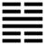

Lôi Sơn Tiểu Quá (小過 xiǎo guò)
Tin (Trung phu) mà làm ngay, không xét đều tin đó phải hay không, thì có thể mắc lầm lỗi, cho nên sau quẻ Trung phu tới quẻ Tiểu quá. Quá có hai nghĩa: lỗi; ra ngoài cái mức vừa phải thoán từ dưới đây dùng nghĩa sau.
Thoán từ:
小過: 亨, 利貞. 可小事, 不可 大事．飛鳥遺之音, 不宜上, 宜下, 大吉．
Tiểu quá: Hanh, lợi trinh. Khả tiểu sự, bất khả đại sự.
Phi điểu di chi âm, bất nghi thượng, nghi hạ, đại cát.
Dịch: Cái nhỏ nhiều: Hanh thông hợp đạo chính thì lợi. Có thể làm việc nhỏ, không thể làm việc lớn. Con chim bay mà để tiếng kêu lại, không nên lên cao mà nên xuống thấp. Người quân tử biết được như vậy thì tốt.
Giảng: Quẻ này trái với quẻ Đại quá số 28. đại quá có 4 hào dương ở giữa, 2 hào âm ở dưới cùng và trên cùng, như vậy dương nhiều hơn âm, mà dương có nghĩa là lớn, âm là nhỏ, cho nên Đại quá có nghĩa là cái lớn (dương) nhiều hơn. Tiểu quá có 2 hào dương ở giữa, 4 hào âm ở trên và dưới, như vậy là âm – tức cái nhỏ - nhiều hơn dương tức cái lớn; cho nên đặt tên là Tiểu quá. Tiểu quá là cái nhỏ nhiều hơn; nhưng cũng có nghĩa là quá chút ít.
Bình thường thì vừa phải là hay. Nhưng cũng có khi quá một chút lại hay, chẳng hạn trong nhà, chồng tiêu pha nhiều quá, vợ chắt bóp một chút để được trung bình; hoặc khi thiên về bên tả quá, muốn lấy lại mức trung thì lại nên thiên về bên hữu một chút. Nhưng việc gì cũng phải hợp lẽ, hợp thời, hợp đạo chính thì mới được. Đó là ý nghĩa câu đầu.
Câu thứ hai” “Chỉ nên “quá” trong việc nhỏ, không nên “quá trong việc lớn; vì việc nhỏ, lỡ có quá một chút, hậu quả không tai hại, còn việc lớn mà lỡ quá một chút, một li có thể đi một dặm hậu quả rât nặng nề, như việc nước, lỗi lầm một chút có thể gây chiến tranh hoặc sự suy sụp về kinh tế....
Thoán truyện Giảng: Các hào dương (lớn) đều không đắc trung, là quân tử nhất thời, không làm việc lớn được.
Câu thứ ba tối nghĩa, không hiểu sao lại dùng tượng con chim bay ở đây. Mỗi nhà giải thích một khác: Chu Hi bảo “trong thực, ngoài hư như con chim bay”, có lẽ vì cho hai hào âm ở dưới như hai chân chim, hai hào âm ở trên như hai cánh chim xòe ra? Còn về ý nghĩa thì có người Giảng: người quân tử ở thời Tiểu quá nên khiêm tốn, không nên có tiếng tăm lớn, chỉ nên như tiếng chim kêu khi bay, thoáng qua mà thôi; mà cũng không nên ở ngôi cao, như con chim không nên bay lên cao. Hai chữ “đại cát”, các sách đều dịch là rất tốt; Phan Bội Châu dịch là tốt cho người quân tử, nếu đừng có tiếng tăm, đừng ở ngôi cao “Đại” đó trỏ người quân tử.
Đại Tượng truyện giản: Chấn ở trên Cấn là tiếng sấm ở trên núi, bị nghẹt vì núi mà thu hẹp lại, nên gọi là Tiểu quá. Người quân tử ở thời này chỉ nên làm quá trong việc nhỏ, như có thể quá cung kính, quá thương cảm trong việc ma chay, quá tiết kiệm.
Ý nghĩa các hào:
1
初六．飛鳥以凶．
Sơ lục: Phi điểu dĩ hung.
Dịch: Hào 1, âm: Chim (nên nấp mà lại) bay, nên xấu.
Giảng: Hào này âm nhu, bất tài, được hào 4, dương; giúp, lại ở thời “hơi quá” (Tiểu quá), nên hăng hái muốn làm việc quá, e mắc vạ, cho nên xấu. Chỉ nên làm chim nấp, đừng làm chim bay.
2.
六二: 過其祖, 遇其妣, 不及其君. 遇其臣, 无咎．
Lục nhị: Quá kì tổ, ngộ kì tỉ, bất cập kì quân.
Ngộ kì thần,vô cữu.
Dịch: Hào 2, âm: Vượt qua ông mà gặp bà; không được gặp vua thì nên giữ phận bề tôi, như vậy không lỗi.
Giảng: Hào nay nhu thuận, trung chính ở vào thời Tiểu qua,1 có quá một chút mà không lỗi. Nó là âm đáng lẽ cầu dương mà nó lại vượt hai hào dương (3 và 4 ) để gặp (ứng với 5) nghĩa là gặp âm nữa, cho nên Hào từ nói là vượt ông mà gặp bà. Hào từ khuyên hào này ở thấp, là phận làm tôi, không gặp được vua thì cứ giữ phận bề tôi (đứng vào hàng những bề tôi khác).
Hào này tối nghĩa, chúng tôi dịch theo Phan Bội Châu, Chu Hi giảng là: không gặp được vua thì gặp bề tôi, như vậy là giữ được trung, chính, tuy hơi quá (vì muốn gặp vua) mà không lỗi (sau gặp bề tôi). Cả hai cách giảng đều không xuôi.
3.
九三．弗過防之, 從或戕之, 凶．
Cửu tam: Phất quá phòng chi, tòng hoặc tường chi, hung.
Dịch: Hào 3, dương: Chẳng quá phòng bị (tiểu nhân) thì rồi sẽ bị chúng làm hại đấy.
Giảng: Thời Tiểu qua; tiểu nhân nhiều hơn quân tử, nên đề phòng quá cẩn thận thì tốt. Hào này dương cương đắc chính là quân tử, nhưng vì quá cương (dương ở vị dương), tự thị, không đề phòng cẩn thận nên bị vạ. Hào này xấu nhất trong quẻ vì bị 2 hào âm ở trên ép xuống, 2 hào âm ở dưới thúc lên, chỉ có mỗi hào 4 là bạn, mà chẳng giúp được gì.
4.
九四: 无咎, 弗過遇之, 往厲, 必戒; 勿用永貞．
Cửu tứ: vô cữu, phất quá ngộ chi, vãng lệ, tất giới; vật dụng vĩnh trinh.
Dịch: Hào 4, dương: không lỗi vì không quá dương mà vừa đúng với đạo lý thời Tiểu quá; nếu tiến tới thì nguy, nên răn về điều đó, đừng cố giữ đức cương của mình, mà nên biến thông.
Giảng: hoàn cảnh hào này y hệt hào 3; cũng bị 2 hào âm ép ở trên, 2 hào âm thúc ở dưới, và cũng ở chỗ chưa dứt được với nội quái, chưa lên hẳn được ngoại quái, đáng lẽ cũng xấu, nhưng nhờ 4 tuy dương mà ở vị âm, như vậy là hơi biết mềm dẻo, không quá cương như 3, đúng với đạo lý thời Tiểu quá, chi nên không có lỗi.
Tuy nhiên phải nhớ đừng tiến lên mà theo hai hào âm, như vậy là quá nhu mất, sẽ nguy; mà cũng đừng cố chấp giữ tính dương cương của mình, mà nên biến thông.
5.
六五: 密雲不雨, 自我西郊; 公弋,取彼在穴．
Lục ngũ: Mật vân bất vũ, tự ngã tây giao;
Công dặc, thủ bỉ tại huyệt.
Dịch: Hào 5, âm: mây kịt mà không mưa ở cõi tây của ta, công bắn mà bắt lấy nó ở hang.
Giảng: Âm dương tiếp xúc với nhau thì mới thành mua, nay âm lên quá cao rồi (hào 5), dương ở dưới, âm dương bất hoà, có cái tượng mây kịt mà không mưa ở cõi tây của ta (như thoán từ quẻ Tiểu súc số 9), đại ý là không làm được gì cả; vì là âm nhu, bất tài lại ở vào thời âm nhiều quá. Chỉ có một cách là xuống tìm hào 2, cũng âm, mà làm bạn. Chữ “cộng” (ông) ở đây trỏ hào 5, “bỉ” (nó) trỏ hào 2; hào 2 ở vị âm, tối tăm cho nên ví với cái hang.
6.
上六: 弗遇過之, 飛鳥離之. 凶, 是謂災眚．
Thượng lục: phất ngộ quá chi, phi điểu li chi. Hung, thị vị tai sảnh.
Dịch: Hào trên cùng, âm: không đúng với đạo mà lại sai quá, như cánh chim bay cao quá, xa quá, sợ bị tai vạ.
Giảng: Hào này âm nhu, mà biến động vì ở ngoại quái Chấn (động), lại ở vào cuối thời Tiểu quá,1 là thái quá, cho nên bảo là sai đạo quá; có cái tượng con chim bay cao quá, xa quá rồi; khó kéo lại được mà còn sợ bị tai vạ nữa. Hào 6 này âm là tiểu nhân, tiểu nhân mà vượt lên trên quân tử (dương hào 4), cho nên răn là sẽ bị tai hoạ.
Quẻ này khuyên quân tử ở vào thời tiểu nhân quá nhiều thì đừng nên quá cương như hào 3, mà nên mềm mỏng một chút, biến thông như hào 4.